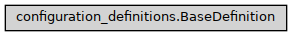

BaseDefinition
- class ase2sprkkr.common.configuration_definitions.BaseDefinition(name, is_optional=False, condition=None)[source]
This class is a member of definition of configuration, that can be both real (holds a value or values) or just virtual. Virtual definitions do not store values, generates grammar e.g. using other members of the container etc…
- Parameters:
name (str) – Name of the value/section
is_optional (bool) – This element can be omited in the parsed file
condition –
- If defined, the condition
the condition.parse_condition() is invoked, when given grammar element should be parsed. If it is False, the element is skipped
the condition() is invoked, when the elements of the container is listed to hide the inactive members
Class hierarchy
Constructor
- validate_section = None
Can be redefined for validating whole section
- class Repeated(value, names=<not given>, *values, module=None, qualname=None, type=None, start=1, boundary=None)[source]
- class Type(value, names=<not given>, *values, module=None, qualname=None, type=None, start=1, boundary=None)[source]
Type of repetition.
- NO = None
- ARRAY = <class 'numpy.ndarray'>
- LIST = <class 'list'>
- DICT = <class 'dict'>
- class Numbering(value, names=<not given>, *values, module=None, qualname=None, type=None, start=1, boundary=None)[source]
Is the output numbered or not?
- NO = 0
- YES = 1
- WITH_DEFAULT = 2
- property has_default
- property is_array
- property is_dict
- NO = Type.NO
- IGNORED = (Type.NO, <class 'ase2sprkkr.common.parsing_results.IgnoredKey'>)
- REPEATED = (Type.LIST, <class 'ase2sprkkr.common.parsing_results.RepeatedKey'>)
- ARRAY = (Type.ARRAY, <class 'ase2sprkkr.common.parsing_results.RepeatedKey'>)
- REPEATED_SECTION = (Type.ARRAY, <function Key.<lambda>>, Numbering.NO, False)
- NUMBERED = (Type.ARRAY, <class 'ase2sprkkr.common.parsing_results.ArrayKey'>, Numbering.YES)
- DICT = (Type.DICT, <class 'ase2sprkkr.common.parsing_results.DictKey'>, Numbering.YES)
- DEFAULTDICT = (Type.DICT, <class 'ase2sprkkr.common.parsing_results.DefDictKey'>, Numbering.WITH_DEFAULT)
- is_repeated = Type.NO
By default, the configuration items are not repeated
- property real_name
- add_grammar_hook(hook)[source]
Added hooks process the grammar of the option/container. E.g. it is used when the number of readed lines should depend on the value of the option.
- grammar(allow_dangerous=False)[source]
Generate grammar with the correct settings of pyparsing global state.
- Parameters:
allow_dangerous (bool) – Allow dangerous values - i.e. values that do not fulfill the requirements for the given-option value (i.e. a type requirement or other constraints).
- property _grammar
Return the grammar. Descendants can redefine this method e.g. to allow not to generate the grammar at all. This method is implemented by property, that conditionaly returns the real method.
- Returns
func: callable Function to generate grammar or None if no grammar is returned
- has_grammar()[source]
Returns, whether the definition generates a grammar or not. By default, it just check the self._grammar
- _hooked_grammar(allow_dangerous=False, **kwargs)[source]
Generates grammar. Unlike
grammar(), it does not change the global pyparsing state to ensure that the generated grammar will handle whitespaces in a propper way. Unlike the_create_grammar()method, which should contain implementation of the grammar creation, this function add the common functionality to the generated grammar (currently, just the grammar hooks)- Parameters:
allow_dangerous (bool)
- _add_hooks_to_grammar(grammar)[source]
Add registered grammar hooks to a grammar.
Developer note: the hooks are added even by grammar types, so it can not accept definition as argument, if you need it, use the closure of the hook to “pass” the argument.
- added_to_container(container)[source]
Hook called, when the object is assigned to the container (currently from the container constructor)
- _get_copy_args()[source]
Compute the dictionary that defines the attributes to create a copy of this object.
- Returns:
copy – The returning dictionary has this structure: { name of the argument of the __init__ function : name of the object attribute }
- Return type:
Dict
- can_be_repeated = False
If True, the item can be repeated in the parsed file. The results will appear multiple times in the resulting dictionary after the parse. This attribute/property function is to be redefined in descendants.
- is_independent_on_the_predecessor = True
- _copy_excluded_args = ['container', 'grammar_hooks']
- property output_definition
- accept_value(value)[source]
Return, whether a given value is accepted by this type of object. Accepting does not mean that the value can be validated. It is a base check, that a type of the value is suitable to be used here. If it is not – e.g. single value is assigned to a section – then the container can try to find another object (e.g. contained value of the same name) where the value is accepted.
- Return type:
bool